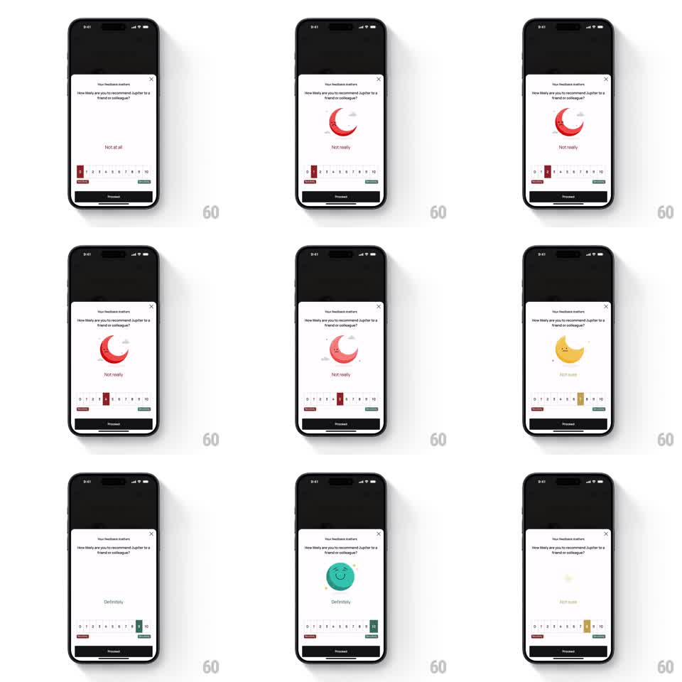

Media
Frame-by-frame

Rebuild this interaction 1:1: Jupiter's NPS scale - tapping a 0-10 rating springs a round mascot through morphing states: a sleepy red crescent moon at low scores, a tired yellow moon mid-scale, and a beaming teal smiley at the top, with the label crossfading to match.

Rebuild this interaction 1:1: Jupiter's NPS scale - tapping a 0-10 rating springs a round mascot through morphing states: a sleepy red crescent moon at low scores, a tired yellow moon mid-scale, and a beaming teal smiley at the top, with the label crossfading to match.
## Integration
Integration: stack-agnostic spec - springs given as stiffness/damping, timed motions as duration + curve; map every value to your framework and animation library of choice.
## Scene
Feedback sheet over a dimmed app: "Your feedback matters" title with X, "How likely are you to recommend Jupiter to a friend or colleague?", a large circular mascot in the middle, a sentiment label under it ("Not at all" / "Not really" / "Not sure" / "Definitely"), a 0-10 number scale with a small colored square marker, "Not likely" and "Very likely" anchors, and a dark Proceed button.
## Motion spec
Pattern: score-driven mascot morph with spring pop.
- Tap (or drag to) a number: the scale marker slides to it (spring ~380/24) and the mascot pops (scale 0.85 -> 1.08 -> 1, spring ~340/13).
- During the pop the mascot morphs: fill color crossfades along the score ramp (red 0-3 -> yellow 4-6 -> teal 9-10, blended between), and the face redraws (closed sleepy eyes + nightcap at low, droopy eyes mid, open smiling eyes + grin at high) - facial features interpolate, not swap.
- The label crossfades with a 4pt vertical drift (200ms) once the mascot lands.
- The marker square takes the mascot's current color (150ms color tween).
- Repeated taps chain pops; a drag scrubs the morph continuously (morph progress bound to marker position).
## Calibration
- The morph is continuous across the whole 0-10 range - every score has an intermediate face, not three discrete states.
- Mascot rests large (~120pt circle); the pop is one overshoot, never a wobble loop.
## Reduced motion
Mascot crossfades between nearest states (200ms); no pop.
## Don't miss
- The crescent moon motif (low scores) vs the full smiley (high) is the character arc - preserve the nightcap and the star accents at the sleepy end.
- Proceed stays disabled-styled until a score is picked.